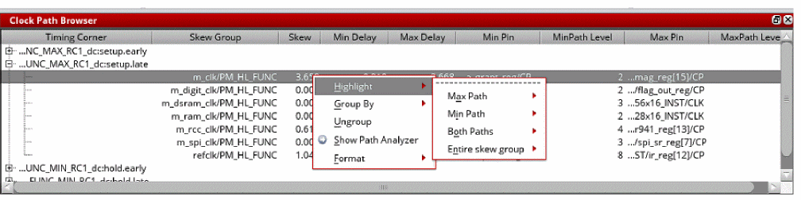
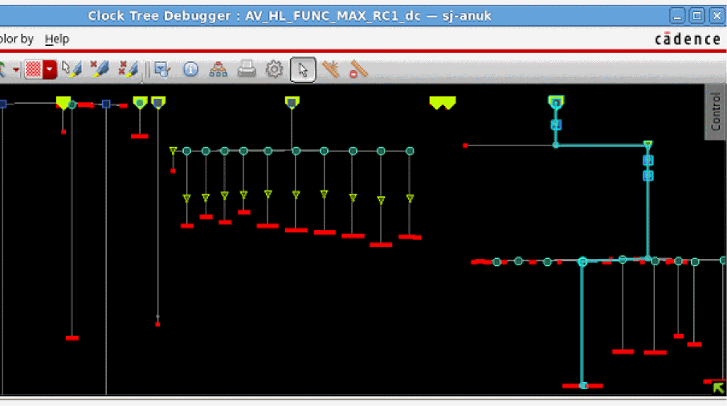
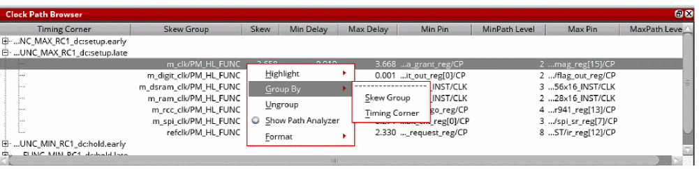
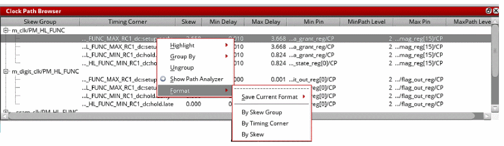

Context Menu of the Clock Path Browser
The context menu of the clock path Browser provides the following functionalities, which you can access when you right-click any marker or line in the clock tree view:
The options are detailed below:
|
Highlight: Highlights the selected item in the specified color. You can highlight the Max Path, Min Path, Both Paths, and Entire skew group. Each of these items has a submenu containing a color picker, as in the Color by menu.  The image below shows the Max Path highlighted in green for the selected item.  |
|
|
Group By: You can group the information displayed in the browser by Skew Group or Timing Corner. When Skew Group is selected, the skew group information is displayed in column #1. When Timing Corner is selected, the timing corner information is displayed in column #1. The image below shows the information grouped by the skew group.  |
|
|
Ungroup: You can ungroup to view all the skew information, which includes both the skew group and analysis view information. |
|
|
Show Path Analyzer: When you select this option in the context menu, the Clock Path Analyzer replaces the Clock Path Browser in its window. It provides a tabbed view containing tables for the min and max paths. To go back to the Clock Path Browser, click the Back button provided in the top-right corner of the window. For more information about the analyzer, see the "Clock Path Analyzer". |
|
|
Format: Allows you to format the information in the Browser By Skew Group, Timing Corner, and By Skew. When By Skew Group is selected, the skew group information is displayed in column #1. When Timing Corner is selected, the timing corner information is displayed in column #1.You can also save the current format by selecting Save Current Format and specifying the name of the format.  |
Return to top